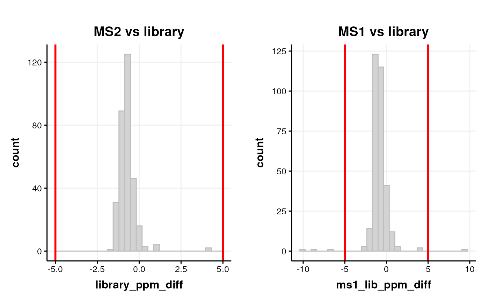
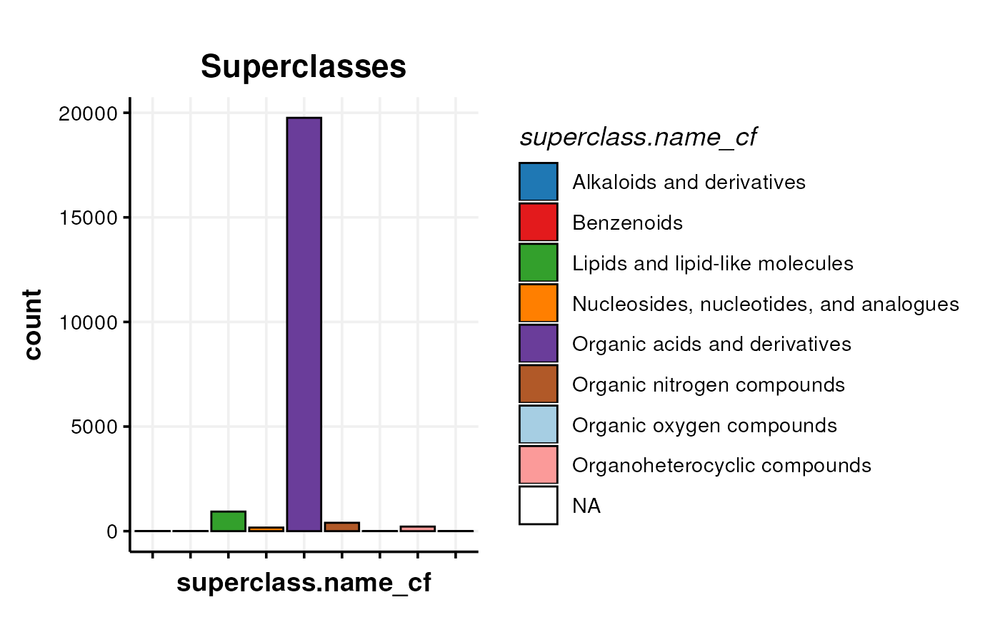

Processing Annotations for LCMS of Daphnia samples
Source:vignettes/daphnia_example.Rmd
daphnia_example.RmdGetting Started
The latest versions of struct and
MetMashR that are compatible with your current R version
can be installed using BiocManager.
# install BiocManager if not present
if (!requireNamespace("BiocManager", quietly = TRUE))
install.packages("BiocManager")
# install MetMashR and dependencies
BiocManager::install("MetMashR")Once installed you can activate the packages in the usual way:
# load the packages
library(struct)
library(MetMashR)
library(metabolomicsWorkbenchR)
library(ggplot2)
library(patchwork)Import Daphina data
TODO
# import HILIC_POS
HP = openxlsx::read.xlsx(
system.file("extdata/daphnia/daphnia_example.xlsx",
package = 'MetMashR'),
sheet='HILIC_POS',
rowNames=FALSE,
colNames=TRUE)
# rename columns
colnames(HP)[1] = 'id'
# append assay to feature id
HP$id = paste0('HILIC_POS_',HP$id)
# convert some columns to numeric
HP$rsd_qc=as.numeric(HP$rsd_qc)
HP$rsd_sample=as.numeric(HP$rsd_sample)
# import LIPIDS_POS
LP = openxlsx::read.xlsx(
system.file("extdata/daphnia/daphnia_example.xlsx",
package = 'MetMashR'),
sheet='LIPIDS_POS',
rowNames=FALSE,
colNames=TRUE)
# rename columns
colnames(LP)[1] = 'id'
# append assay to feature id
LP$id = paste0('LIPIDS_POS_',LP$id)
# convert some columns to numeric
LP$rsd_qc=as.numeric(LP$rsd_qc)
LP$rsd_sample=as.numeric(LP$rsd_sample)Import and clean Compound Discoverer annotations
Here we implement a workflow to process the Compound Discoverer outputs for each assay. Labels are added to aid with filtering in later steps. For duplicate annotations we select the annotation with the highest mzCloud match score. We retain annotations with a Full Match and disregard the rest. Finally we match the MS2 peaks to the MS1 peaks.
cd_workflow =
# import source
import_source() +
# add useful labels
add_labels(
labels = list(
source_name = 'CD',
assay = 'placeholder')) + # placeholder replaced later
# filter low quality
filter_labels(
column_name = 'compound_match',
labels = 'Full match',
mode = 'include') +
# resolve duplicates
combine_records(
group_by = c('compound','ion'),
default_fcn = .select_max(
max_col = 'mzcloud_score',
keep_NA = FALSE,
use_abs = TRUE
)) +
# match MS1 to MS2
mzrt_match(
variable_meta = HP,
mz_column = 'mz',
rt_column = 'rt',
ppm_window = 5,
rt_window = 20,
id_column = 'id'
) +
# ppm difference MS1 vs library
calc_ppm_diff(
obs_mz_column = 'mz_match',
ref_mz_column = 'theoretical_mz',
out_column = 'ms1_lib_ppm_diff'
) We need to apply this workflow to each assay. For convenience we store the sources for each assay in a list.
# prepare sources
cd_sources = list(
HILIC_POS = cd_source(
source = c(
system.file(
'extdata/daphnia/HILIC_POS_EL_CD.xlsx',
package = 'MetMashR'),
system.file(
'extdata/daphnia/HILIC_POS_EL_CD_comp.xlsx',
package = 'MetMashR')),
sheets = c('Compounds','Compounds')
),
LIPIDS_POS = cd_source(
source = c(
system.file(
'extdata/daphnia/LIPIDS_POS_EL_CD.xlsx',
package = 'MetMashR'),
system.file(
'extdata/daphnia/LIPIDS_POS_EL_CD_comp.xlsx',
package = 'MetMashR')),
sheets = c('Compounds','Compounds')
)
)Now we are ready to apply the workflow to the sources. Note that because the labels we are adding are specific to the assay we need to update this input parameter of the workflow before apply it to the source. Again we store the applied workflow in a list for convenience.
# place to store results
CD = list()
# set labels
cd_workflow[2]$labels$assay='HILIC_POS'
# apply workflow
CD$HILIC_POS = model_apply(cd_workflow,cd_sources$HILIC_POS)
# set labels
cd_workflow[2]$labels$assay='LIPIDS_POS'
# apply workflow
CD$LIPIDS_POS = model_apply(cd_workflow,cd_sources$LIPIDS_POS)CD Quality Assurance
In the CD workflow we computed ppm and retention time differences between the mzCloud library used by Compound Discoverer and the MS2 experimental data.
If the peak of the distribution is off centre this can be indicative of e.g. retention time or m/z drift.
If there are a lot of annotations with a large difference vs the
library then these can be excluded by adding e.g. a
filter_range workflow step.
# MS2 vs library
C = annotation_histogram(
factor_name = 'library_ppm_diff',
vline = c(-5,5)
)
g1 = chart_plot(C,predicted(CD$HILIC_POS)) + ggtitle('MS2 vs library')
# MS1 vs library
C = annotation_histogram(
factor_name = 'ms1_lib_ppm_diff',
vline = c(-5,5)
)
g2 = chart_plot(C,predicted(CD$HILIC_POS)) + ggtitle('MS1 vs library')
# layout
cowplot::plot_grid(g1,g2,nrow=1)
The ppm and retention time differences between the MS1 and MS2 features (peaks) can also be indicative of analytical problems.
# prepare chart
C = annotation_histogram2d(
factor_name = c('ppm_match_diff_an','rt_match_diff'),
bins = 30
)
chart_plot(C,predicted(CD$HILIC_POS))The LIPID_POS assay (not shown) only has 2 matches, so the chart is not informative for that assay.
Import and clean LipidSearch annotations
Similarly to the CD sources, here we implement a workflow to process the LipidSearch outputs for each assay. Labels are added to aid with filtering in later steps. For duplicate annotations we select the annotation with the lowest ppm difference vs the library. We retain only LS annotations with Grades A and B.
# prepare workflow
ls_workflow =
# import raw file
import_source() +
# add labels
add_labels(
labels = c(
assay = 'placeholder', # will be replaced later
source_name = 'LS'
))+
# filter by grade
filter_labels(
column_name = 'Grade',
labels = c('A','B'),
mode = 'include') +
# resolve duplicates
combine_records(
group_by = c('LipidIon'),
default_fcn = .select_min(
min_col = 'library_ppm_diff',
keep_NA = FALSE,
use_abs = TRUE
)
) +
# match MS1 to MS2
mzrt_match(
variable_meta = HP,
mz_column = 'mz',
rt_column = 'rt',
ppm_window = 5,
rt_window = 20,
id_column = 'id'
) +
# ppm difference MS1 vs library
calc_ppm_diff(
obs_mz_column = 'mz_match',
ref_mz_column = 'theor_mass',
out_column = 'ms1_lib_ppm_diff'
) Next we prepare the LipidSearch source objects:
# prepare sources
ls_sources = list(
HILIC_POS = ls_source(
source =
system.file(
'extdata/daphnia/HILIC_POS_EL_LS.txt',
package = 'MetMashR')
),
LIPIDS_POS = ls_source(
source =
system.file(
'extdata/daphnia/LIPIDS_POS_EL_LS.txt',
package = 'MetMashR')
)
)Now we can apply the LipidSearch workflow to the LipidSearch sources:
# place to store results
LS = list()
# set labels
ls_workflow[2]$labels$assay='HILIC_POS'
# apply workflow
LS$HILIC_POS = model_apply(ls_workflow,ls_sources$HILIC_POS)
# set labels
ls_workflow[2]$labels$assay='LIPIDS_POS'
# apply workflow
LS$LIPIDS_POS = model_apply(ls_workflow,ls_sources$LIPIDS_POS)LS Quality Assurance
We can assess drift in m/z and/or retention time using histograms of ppm and differences vs the library like we did before.
# MS2 vs library
C = annotation_histogram(
factor_name = 'library_ppm_diff',
vline = c(-5,5)
)
g1 = chart_plot(C,predicted(LS$HILIC_POS)) + ggtitle('MS2 vs library')
# MS1 vs library
C = annotation_histogram(
factor_name = 'ms1_lib_ppm_diff',
vline = c(-5,5)
)
g2 = chart_plot(C,predicted(LS$HILIC_POS)) + ggtitle('MS1 vs library')
# layout
cowplot::plot_grid(g1,g2,nrow=1)We can also check for analytical issue by comparing the MS1 and MS2 ppm and retention time differences.
# prepare chart
C = annotation_histogram2d(
factor_name = c('ppm_match_diff_an','rt_match_diff'),
bins = 30
)
chart_plot(C,predicted(LS$HILIC_POS))Mashing all sources / assays
Now that we have imported and cleaned the individual sources we can combine them into a single annotation_table. This table can the be further cleaned and augmented with additional information as required.
Here, we use the normalise_strings object to clean and
tidy metabolite names to improve matches when searching for inchikey’s
using PubChem and LipidMaps APIs.
We then use the inchikey’s to obtain pathway information from the PathBank metabolite database.
Imported statistics for the MS1 peaks are joined with the annotation table and used to quality filter the MS1 peaks based on an assessment of quality (RSD of the QC samples < 30).
Finally, we collapse the table such that each MS1 peak has a list of possible annotations.
For the vignette we used cached results, which we prepare now.
cache1=rds_database(
source=file.path(
system.file('cached',package='MetMashR'),'cache1.rds'))
cache2=rds_database(
source=file.path(
system.file('cached',package='MetMashR'),'cache2.rds'))
cache3=rds_database(
source=file.path(
system.file('cached',package='MetMashR'),'cache3.rds'))
cache4=rds_database(
source=file.path(
system.file('cached',package='MetMashR'),'cache4.rds'))Next we prepare the workflow and then apply it.
WF =
combine_sources(
list(
predicted(CD$LIPIDS_POS),
predicted(LS$HILIC_POS),
predicted(LS$LIPIDS_POS)),
source_col = 'annotation_source',
keep_cols = '.all',
matching_columns = c(
Compound = 'compound',
Compound = 'LipidName',
Ion = 'ion',
Ion = 'LipidIon',
theoretical_mz = 'theor_mass',
LipidClass = 'Class')
) +
normalise_strings(
search_column = 'Compound',
output_column = 'normalised_compound',
dictionary = c(
# custom dictionary
list(
# replace "NP" with "Compound NP"
list(
pattern = '^NP-',
replace = 'Compound NP-'),
# remove terms in trailing brackets e.g." (ATP)"
list(
pattern = '\\ \\([^\\)]*\\)$',
replace = ''),
# replace known abbreviations
list(
pattern = '3-Fluoro NNEI',
replace = '3-Fluoro-nnei',
fixed = TRUE),
list(
pattern = 'Υ-L-Glutamyl-L-glutamic acid',
replace = 'Tyr-Glu-Glu'
),
list(
pattern = 'AcCa',
replace = 'CAR'
)
),
# update tripeptides
.tripeptide_dictionary,
# remove racemic information
.racemic_dictionary,
# replace greek characters
.greek_dictionary
)
) +
pubchem_property_lookup(
query_column = 'normalised_compound',
search_by = 'name',
property = 'InChIKey',
suffix = '_pubchem',
cache = cache1
) +
lipidmaps_lookup(
query_column = 'normalised_compound',
context = 'compound',
context_item = 'abbrev',
output_item = 'inchi_key',
suffix = '_abbrev',
cache = cache2
)+
lipidmaps_lookup(
query_column = 'normalised_compound',
context = 'compound',
context_item = 'abbrev_chains',
output_item = 'inchi_key',
suffix = '_abbrevchains',
cache = cache3
) +
combine_columns(
c('InChIKey_pubchem','inchi_key_abbrev','inchi_key_abbrevchains'),
output_name = 'inchikey',
source_name = 'inchikey_src',
source_tags = c('pubchem','lm_abbrev','lm_chains'),
clean = TRUE
) +
classyfire_lookup(
query_column = 'inchikey',
output_items = '.all',
output_fields = '.all',suffix = '_cf',
cache = cache4,
delay = 5
) +
database_lookup(
query_column = 'inchikey',
database_column = 'InChI.Key',
database = PathBank_metabolite_database(),
include = c('Pathway.Name','Pathway.Subject','Species'),
suffix = '',
not_found = NA
) +
add_columns(
new_columns = rbind(HP,LP),
by = c('mzrt_match_id'='id')
) +
filter_na(
column_name = 'inchikey'
) +
combine_records(
group_by = 'mzrt_match_id',
default_fcn = .unique(
separator = ' || ')
) +
filter_labels(
column_name = 'rsd_qc',
labels = 'NA',
mode = 'exclude'
) +
filter_range(
column_name = 'rsd_qc',
upper_limit = 20,
lower_limit=-Inf,
equal_to=FALSE
)
WF = model_apply(WF,predicted(CD$HILIC_POS))We can explore the contents of the table. Here we generate plots to visualise the number of annotations from each source.
# pie chart of the sources of annotations
C = annotation_pie_chart(
factor_name = 'source_name',
label_location = 'outside'
)
chart_plot(C,predicted(WF)) + ggtitle('Annotations per source')Next we plot a histogram of the QC-RSD values before filtering, by indexing the relevant step of the workflow.
# histogram of the rsd-qc for annotated features (before filtering)
C = annotation_histogram(
factor_name = 'rsd_qc',
bins = 30,
vline = 20
)
chart_plot(C,predicted(WF[12])) +
ggtitle('MS1 peak QC-RSD',"Features with QC-RSD<20 were removed by the workflow.")In this plot we present a bar chart of the different molecular classes present in the final table.
# bar chart of the superclasses
C = annotation_bar_chart(
factor_name = 'superclass.name_cf',
legend = TRUE,label_type = 'none'
)
chart_plot(C,predicted(WF[10])) + ggtitle('Superclasses')
Finally we use the PubChem API to generate an image of the molecular structure for one of the metabolites.
# display one of the metabolite structures
C = pubchem_widget(
query_column = 'normalised_compound',
row_index=1,
record_type = '3D-Conformer',
display = FALSE,
hide_title = FALSE,
height = '820px')
chart_plot(C,predicted(WF))Session Info
sessionInfo()
#> R version 4.3.2 (2023-10-31)
#> Platform: x86_64-pc-linux-gnu (64-bit)
#> Running under: Ubuntu 22.04.3 LTS
#>
#> Matrix products: default
#> BLAS: /usr/lib/x86_64-linux-gnu/openblas-pthread/libblas.so.3
#> LAPACK: /usr/lib/x86_64-linux-gnu/openblas-pthread/libopenblasp-r0.3.20.so; LAPACK version 3.10.0
#>
#> locale:
#> [1] LC_CTYPE=en_US.UTF-8 LC_NUMERIC=C
#> [3] LC_TIME=en_US.UTF-8 LC_COLLATE=en_US.UTF-8
#> [5] LC_MONETARY=en_US.UTF-8 LC_MESSAGES=en_US.UTF-8
#> [7] LC_PAPER=en_US.UTF-8 LC_NAME=C
#> [9] LC_ADDRESS=C LC_TELEPHONE=C
#> [11] LC_MEASUREMENT=en_US.UTF-8 LC_IDENTIFICATION=C
#>
#> time zone: UTC
#> tzcode source: system (glibc)
#>
#> attached base packages:
#> [1] stats graphics grDevices utils datasets methods base
#>
#> other attached packages:
#> [1] patchwork_1.2.0 ggplot2_3.4.4
#> [3] metabolomicsWorkbenchR_1.12.0 MetMashR_0.1.0
#> [5] struct_1.14.0 BiocStyle_2.30.0
#>
#> loaded via a namespace (and not attached):
#> [1] DBI_1.2.1 bitops_1.0-7
#> [3] gridExtra_2.3 rlang_1.1.3
#> [5] magrittr_2.0.3 matrixStats_1.2.0
#> [7] e1071_1.7-14 compiler_4.3.2
#> [9] RSQLite_2.3.4 systemfonts_1.0.5
#> [11] vctrs_0.6.5 stringr_1.5.1
#> [13] pkgconfig_2.0.3 crayon_1.5.2
#> [15] fastmap_1.1.1 dbplyr_2.4.0
#> [17] XVector_0.42.0 labeling_0.4.3
#> [19] utf8_1.2.4 rmarkdown_2.25
#> [21] structToolbox_1.14.0 ragg_1.2.7
#> [23] purrr_1.0.2 bit_4.0.5
#> [25] xfun_0.41 MultiAssayExperiment_1.28.0
#> [27] zlibbioc_1.48.0 cachem_1.0.8
#> [29] GenomeInfoDb_1.38.5 jsonlite_1.8.8
#> [31] blob_1.2.4 highr_0.10
#> [33] DelayedArray_0.28.0 R6_2.5.1
#> [35] bslib_0.6.1 stringi_1.8.3
#> [37] GenomicRanges_1.54.1 jquerylib_0.1.4
#> [39] Rcpp_1.0.12 bookdown_0.37
#> [41] SummarizedExperiment_1.32.0 knitr_1.45
#> [43] IRanges_2.36.0 Matrix_1.6-5
#> [45] tidyselect_1.2.0 abind_1.4-5
#> [47] yaml_2.3.8 curl_5.2.0
#> [49] lattice_0.22-5 tibble_3.2.1
#> [51] plyr_1.8.9 Biobase_2.62.0
#> [53] withr_3.0.0 evaluate_0.23
#> [55] ontologyIndex_2.11 desc_1.4.3
#> [57] sf_1.0-15 units_0.8-5
#> [59] proxy_0.4-27 BiocFileCache_2.10.1
#> [61] zip_2.3.0 pillar_1.9.0
#> [63] BiocManager_1.30.22 filelock_1.0.3
#> [65] MatrixGenerics_1.14.0 KernSmooth_2.23-22
#> [67] stats4_4.3.2 generics_0.1.3
#> [69] sp_2.1-2 RCurl_1.98-1.14
#> [71] S4Vectors_0.40.2 munsell_0.5.0
#> [73] scales_1.3.0 class_7.3-22
#> [75] glue_1.7.0 tools_4.3.2
#> [77] data.table_1.14.10 openxlsx_4.2.5.2
#> [79] fs_1.6.3 cowplot_1.1.2
#> [81] grid_4.3.2 colorspace_2.1-0
#> [83] GenomeInfoDbData_1.2.11 cli_3.6.2
#> [85] textshaping_0.3.7 fansi_1.0.6
#> [87] ggthemes_5.0.0 S4Arrays_1.2.0
#> [89] dplyr_1.1.4 gtable_0.3.4
#> [91] sass_0.4.8 digest_0.6.34
#> [93] BiocGenerics_0.48.1 classInt_0.4-10
#> [95] SparseArray_1.2.3 farver_2.1.1
#> [97] memoise_2.0.1 htmltools_0.5.7
#> [99] pkgdown_2.0.7 lifecycle_1.0.4
#> [101] httr_1.4.7 bit64_4.0.5